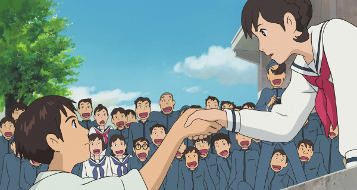
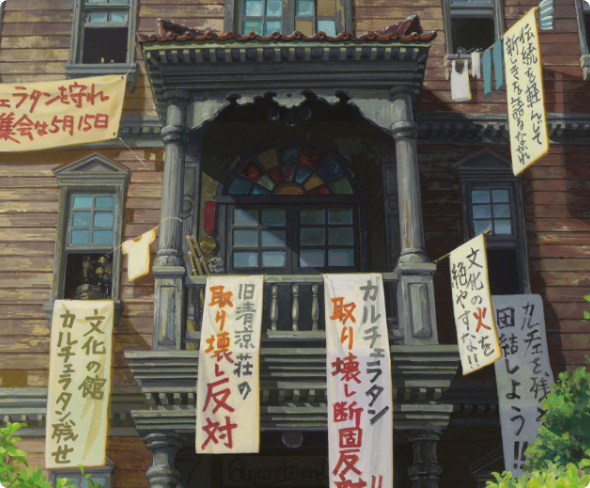
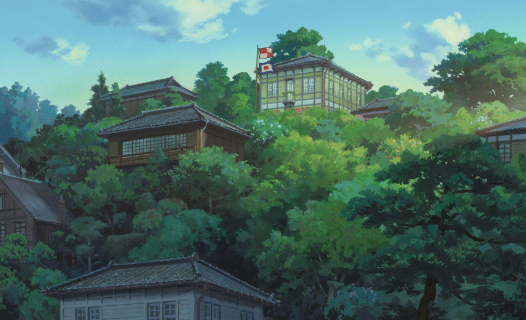
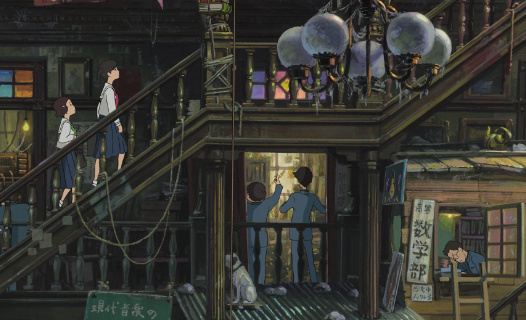

あらすじ

コクリコ荘と呼ばれる下宿を祖母と営む高校生の松崎海（メル）は、亡くなった船乗りの父のために、毎日「安全な航海を祈る」という意味の旗をあげていた。高校では文化部部室が集まる洋館カルチェラタンを取り壊すか、それとも保存するべきかという論争が起きており、その最中でメルは新聞部部長の風間俊と出会い、いつしかふたりは心を通わせていく。
登場人物
-
松崎海
-
風間俊
-
北斗美樹
-
広小路幸子
-
小野寺善雄
-
水沼史郎
コクリコ荘と、カルチェラタンという二つの建物の対比

舞台となる横浜の街の中は坂が多く、商店街ではたくさんの人々が行き交い、活気に満ちている。主人公のメルが住むコクリコ荘は海の見える丘の上にあり、俊はコクリコ荘の目の前の海を養父のタグボートで毎日通っていた。山下公園や桜木町駅といった実際の場所も、東京オリンピック前の高度経済成長期の時の姿で登場している。
それぞれの住まいにいる登場人物も好対照だ。コクリコ荘の住人の女性たちはそれぞれが研修医や画家の卵など、“自立”を目指そうとしている。一方で、カルチェラタンに集う男子たちは自分たちの活動に熱中しているが、その他のこと（具体的には掃除）には目を向けようともしないボンクラぶりも伝わってくる。
コクリコ荘、カルチェラタンという場所はそれぞれ、“女性たちの巣”、“男たちの巣”であり、男女それぞれの価値観や生き方に沿うかのように、明確に分けられているコミュニティなのである（公式サイトでもこのことは指摘されている）。
このような対比がありつつも、それぞれの場所とそこにいる人々が、そのままで存分に魅力的に描かれているということが、映画『コクリコ坂から』のすてきなところだ。
女たちが住まうコクリコ荘

コクリコ荘は病院を改装してつくられた下宿であり、主人公の女子高生、メル（海）の自宅だ。玄関や廊下、メルの祖母がいる母の書斎は病院の雰囲気を残している。庭にはたくさんのコクリコ（ひなげし）の花が咲いており、船舶に向けた信号旗をあげるための旗竿がある。 手入れや掃除も行き届いており、住人たちは１階の食堂に集まって食事を食べる様子からは、生活の秩序と“清潔さ”が保たれているように見える。 この下宿に住む住人は、メルの弟である陸を除き、全員が女性だ。 女性たちが住まう場所としては、ほとんど理想的な住まいといえるコクリコ荘。 同じ時期に造られたはずの、男子たちが集う建物のカルチェラタンは、それとは全くの正反対だ。
男たちの魔窟・カルチェラタン

カルチェラタンは文化部の部室棟であり、老朽化による取り壊しの是非が論争を呼んでいた。その中では天文部、哲学研究会、アマチュア無線部などの部室がごった返していて、生徒たちはそれぞれ熱心に活動に励んでいる。新聞部部長の俊は学校新聞や討論の場で、カルチェラタンの取り壊しに強く反対していた。 その洋風の内装の中には、廊下をはじめとしたあらゆる場所に所狭しと物が置かれ、埃まみれでゴミゴミしていて不潔。しかし、メルに“すてきな魔窟”と呼ばれるその場所は、とてつもなく魅力的でもある。